The first Ecopath equation describes how the production term for each group (i) can be split in components. This is implemented with the equation,
Production = catches + predation mortality + biomass accumulation + net migration + other mortality Eq. 1
or, more formally,
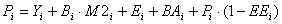
Eq. 2where Pi is the total production rate of (i), Yi is the total fishery catch rate of (i), M2i is the total predation rate for group (i), Bi the biomass of the group, E i the net migration rate (emigration – immigration), BA i is the biomass accumulation rate for (i), while M0i = Pi · (1-EEi) is the ‘other mortality’ rate for (i).
This formulation incorporates most of the production (or mortality) components in common use, perhaps with the exception of gonadal products. Gonadal products however nearly always end up being eaten by other groups, and can be included in either predation or other mortality.
See "Eq. 2" can be re-expressed as
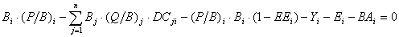
Eq. 3or
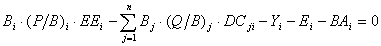
Eq. 4where:
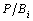
is the production/biomass ratio,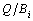
is the consumption / biomass ratio, and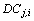
is the fraction of prey (i) in the average diet of predator (j).Based on See " Eq. 3", for a system with n groups, n linear equations can be given, in explicit terms,
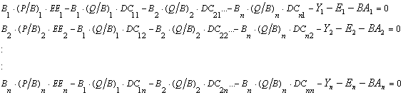
Eq. 5This system of simultaneous linear equations can be re-expressed
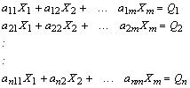
Eq. 6with n being equal to the number of equations, and m to the number of unknowns.
This can be written in matrix notation as
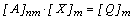
Eq. 7Given the inverse A-1 of the matrix A, this provides
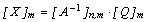
Eq. 8If the determinant of a matrix is zero, or if the matrix is not square, it has no ordinary inverse. However, a generalized inverse can be found in most cases (Mackay, 1981). In the Ecopath model, the approach of Mackay (1981) is used to estimate the generalized inverse.
If the set of equations is over-determined (more equations than unknowns), and the equations are not consistent with each other, the generalized inverse method provides least squares estimates, which minimizes the discrepancies. If, on the other hand, the system is underdetermined (more unknowns than equations), an answer that is consistent with the data will still be output. However, it will not be a unique answer.
Of the terms See " Eq. 3" the production rate, Pi, is calculated as the product of Bi, the biomass of (i) and Pi/Bi, the production/biomass ratio for group (i). The Pi/Bi rate under most conditions corresponds to the total mortality rate, Z, see Allen (1971), commonly estimated as part of fishery stock assessments. The ‘other mortality’ is a catch-all term including all mortality not elsewhere included, e.g., mortality due to diseases or old age, and is internally computed from,
M0i = Pi · (1 – EEi) Eq. 9
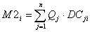
Eq. 10where the summation is over all (n) predator groups (j) feeding on group (i), Qj is the total consumption rate for group (j), and DCji is the fraction of predator (j)’s diet contributed by prey (i). Qj is calculated as the product of Bj, the biomass of group (j) and Qj/Bj, the consumption/biomass ratio for group (j).
An important implication of the equation above is that information about predator consumption rates and diets concerning a given prey can be used to estimate the predation mortality term for the group, or, alternatively, that if the predation mortality for a given prey is known the equation can be used to estimate the consumption rates for one or more predators instead.
For parameterization Ecopath sets up a system with (at least in principle) as many linear equations as there are groups in a system, and it solves the set for one of the following parameters for each group:
Biomass;
Production/biomass ratio;
Consumption/biomass ratio; or
Ecotrophic efficiency.
If, and only if, all four of these parameters are entered, the program will prompt you during basic parameterization whether to estimate the biomass accumulation, or, alternatively, to estimate the net migration rate. If a positive response is given, the program will use all the four basic parameters and it will establish mass-balance by calculating one of the two other parameters. If only three of the basic parameters are entered the following parameters must be entered for all groups:
Catch rate;
Net migration rate;
Biomass accumulation rate;
Assimilation rate; and
Diet compositions.
It was indicated above that Ecopath does not rely on solving a full set of linear equations, i.e., there may be less equations than there are groups in the system. This is due to a number of algorithms included in the parameterization routine that will try to estimate iteratively as many ‘missing’ parameters as possible before setting up the set of linear equations. The following loop is carried out until no additional parameters can be estimated.
The gross food conversion efficiency, gi, is estimated using
gi= (Pi/Bi) / (Qi/Bi)Eq. 11
while Pi/Bi and Qi/Bi are attempted solved by inverting the same equation. The P/B ratio is then estimated (if possible) from
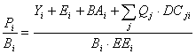
Eq. 12This expression can be solved if both the catch, biomass and ecotrophic efficiency of group i, and the biomasses and consumption rates of all predators on group i are known (including group i if a zero order cycle, i.e., ‘cannibalism’ exists). The catch, net migration and biomass accumulation rates are required input, and hence always known;
The EE is sought estimated from
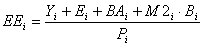
,Eq. 13where the predation mortality M2 is estimated from See " Eq. 10".
In cases where all input parameters have been estimated for all prey for a given predator group it is possible to estimate both the biomass and consumption/biomass ratio for such a predator. The details of this are described in Appendix 4, Algorithm 3.
If for a group the total predation can be estimated it is possible to calculate the biomass for the group as described in detail in Appendix 4, Algorithm 4.
In cases where for a given predator j the P/B, B, and EE are known for all prey, and where all predation on these prey apart from that caused by predator j is known the B or Q/B for the predator may be estimated directly.
In cases where for a given prey the P/B, B, EE are known and where the only unknown predation is due to one predator whose B or Q/B is unknown, it may be possible to estimate the B or Q/B of the prey in question.
After the loop no longer results in estimate of any ‘missing’ parameters a set of linear equations is set up including the groups for which parameters are still ‘missing’. The set of linear equations is then solved using a generalized inverse method for matrix inversion described by Mackay (1981). It is usually possible to estimate P/B and EE values for groups without resorting to including such groups in the set of linear equations.
The loop above serves to minimize the computations associated with establishing mass-balance in Ecopath. The desired situation is, however, that the biomasses, production/biomass and consumption/biomass ratios are entered for all groups and that only the ecotrophic efficiency is estimated, given that no procedure exists for its field estimation.